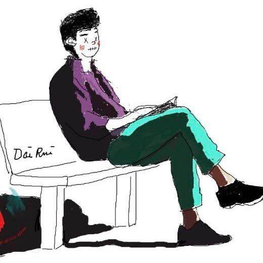

Rui Dai
Ph.D. student at Inria.
Research Affiliate
STARS team,
Institut national de recherche en informatique et en automatique (Inria)
Home
Publication
CV
SocialHosted on GitHub Pages — Theme by orderedlist
Published & Forthcoming Papers
Toyota Smarthome Untrimmed: Real-World Untrimmed Videos for Activity Detection
Rui Dai, Srijan Das, Saurav Sharma, Luca Minciullo, Lorenzo Garattoni, Francois Bremond, and Gianpiero Francesca. ArXiv preprint. arXiv: 2010.14982.
[Project Site] [Demo Video]
PDAN: Pyramid Dilated Attention Network for Action Detection
Rui Dai, Srijan Das, Luca Minciullo, Lorenzo Garattoni, Gianpiero Francesca and Francois Bremond. In Proceedings of the IEEE Winter Conference
on Applications of Computer Vision, WACV 2021, Virtual, January 5-9, 2021.
Selective Spatio-Temporal Aggregation Based Pose Refinement System: Towards Understanding Human Activities in Real-World Videos
Di Yang, Rui Dai, Yaohui Wang, Rupayan Mallick, Luca Minciullo, Gianpiero Francesca, Francois Bremond. In Proceedings of the IEEE Winter Conference
on Applications of Computer Vision, WACV 2021, Virtual, January 5-9, 2021.
VPN : Learning Video-Pose Embedding for Activities of Daily Living
Srijan Das, Saurav Sharma, Rui Dai, Francois Bremond and Monique Thonnat. In Proceedings of the 16th European Conference on Computer
Vision, ECCV 2020, online, UK, 23-28 August 2020.
Smarthome : Real World Activities of Daily Living.
Srijan Das, Rui Dai, Michal Koperski, Luca Minciullo, Lorenzo Garattoni, Francois Bremond and Gianpiero Francesca. In Proceedings of the 17th International Conference
on Computer Vision, ICCV 2019, in Seoul, Korea, October 27 to November 2, 2019.
Self-Attention Temporal Convolutional Network for Long-Term Daily Living Activity Detection.
Rui Dai, Luca Minciullo, Lorenzo Garattoni, Gianpiero Francesca and Francois Bremond. In Proceedings of the 14th IEEE International Conference on Advanced Video and Signal-Based Surveillance, AVSS 2019., in Taipei, Taiwan, 18-21 September 2019. (Oral)
Patents
METHOD FOR RECOGNIZING ACTIVITIES USING SEPARATE SPATIAL AND TEMPORAL ATTENTION WEIGHTS
Inventors: Srijan Das,Rui Dai, Luca Minciullo, Lorenzo Garattoni, Francois Bremond, and Gianpiero Francesca. EP Patent WO2021069945A1.